---
title: "Salarios en Ciencia de Datos"
author: "R-Ladies Medellín"
---Tutorial: Autoría
1 Descripción general
En este tutorial, le mostraremos cómo crear documentos Quarto en RStudio. En particular, discutiremos los diversos formatos de documentos que puede producir con el mismo código fuente y le mostraremos cómo agregar componentes como índices, ecuaciones, citas, etc. El editor visual de markdown en RStudio facilita muchas de estas tareas, por lo que destacaremos su uso en este tutorial, pero tenga en cuenta que también es posible realizar estas tareas en el editor de código fuente.
Si desea seguir paso a paso en su propio entorno, asegúrese de tener instalada la última versión de RStudio.
2 Formatos de salida
Quarto admite la representación de notebooks en docenas de formatos de salida diferentes. De forma predeterminada, se utiliza el formato html, pero puede especificar un formato (o formatos) alternativo dentro de las opciones del documento.
2.1 Opciones de formato
Puede elegir el formato en el que desea representar su documento Quarto al momento de crear su nuevo documento. Para crear un nuevo documento, vaya a File > New File >Quarto Document.
En el campo Title, proporcione un título para su documento (por ejemplo, la captura de pantalla a continuación sugiere “Salarios en Ciencia de Datos”) y agregue su nombre al campo Author. A continuación, seleccionará el formato de salida para su documento. De forma predeterminada, RStudio sugiere usar HTML como salida, dejemos ese valor predeterminado por ahora.
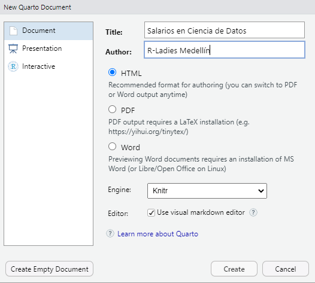
Se creará un nuevo documento con el siguiente YAML.
Tenga en cuenta que nuestra elección de formato (HTML) ni siquiera se refleja en YAML, ya que es el formato de salida predeterminado para los documentos en cuarto. Sin embargo, puede editar directamente el YAML para cambiar el formato de salida, por ejemplo a PDF (pdf) o MS Word (docx). Agregue format: pdf al YAML de su documento como se muestra a continuación.
---
title: "Salarios en Ciencia de Datos"
author: "R-Ladies Medellín"
format: pdf
---Desafortunadamente, este documento no tiene contenido, por lo que renderizarlo no resultaría en un resultado muy interesante. Para que sea un poco más fácil demostrar todas las funciones que queremos resaltar en este tutorial, cerremos este documento vacío y comencemos con uno que tenga un poco de contenido. Si desea seguir paso a paso en su propio entorno, descargue el documento Quarto (.qmd) a continuación y ábralo en RStudio.
Para crear archivos PDF, deberá instalar una versión reciente de LaTeX. Recomendamos el uso de TinyTeX (que se basa en TexLive), que puedes instalar con el siguiente comando en la terminal:
Consulte el artículo sobre PDF Engines para obtener detalles sobre el uso de otras versiones de LaTeX y motores de compilación de PDF.
Una vez que haya configurado LaTeX, haga clic en Render. Recomendamos también marcar la casilla Render on Save para obtener una vista previa en vivo de sus cambios. Como se muestra a continuación, debería ver el PDF renderizado en el visor de RStudio.
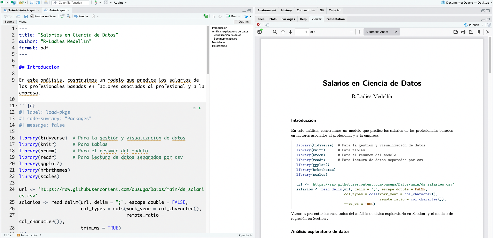
A continuación, agreguemos una opción a YAML, por ejemplo, para agregar números de línea a los fragmentos de código (code-line-numbers: true). Agregue esta opción al YAML de su documento como se muestra a continuación, prestando atención al esquema de sangría. Bajo format: nuestra opción de formato pdf está con espacio de sangría (con dos espacios) y va seguida de : para indicar que se especificarán más opciones para ese formato. En la siguiente línea, con una sangría adicional de dos espacios, agregamos code-line-numbers: true.
---
title: "Salarios en Ciencia de Datos"
author: "R-Ladies Medellín"
format:
pdf:
code-line-numbers: true
---Si marcó Render on Save anteriormente, simplemente guarde el documento después de realizar este cambio para obtener una vista previa en vivo. De lo contrario, renderice el documento para ver sus actualizaciones reflejadas, incluida una tabla de contenido similar a la siguiente.
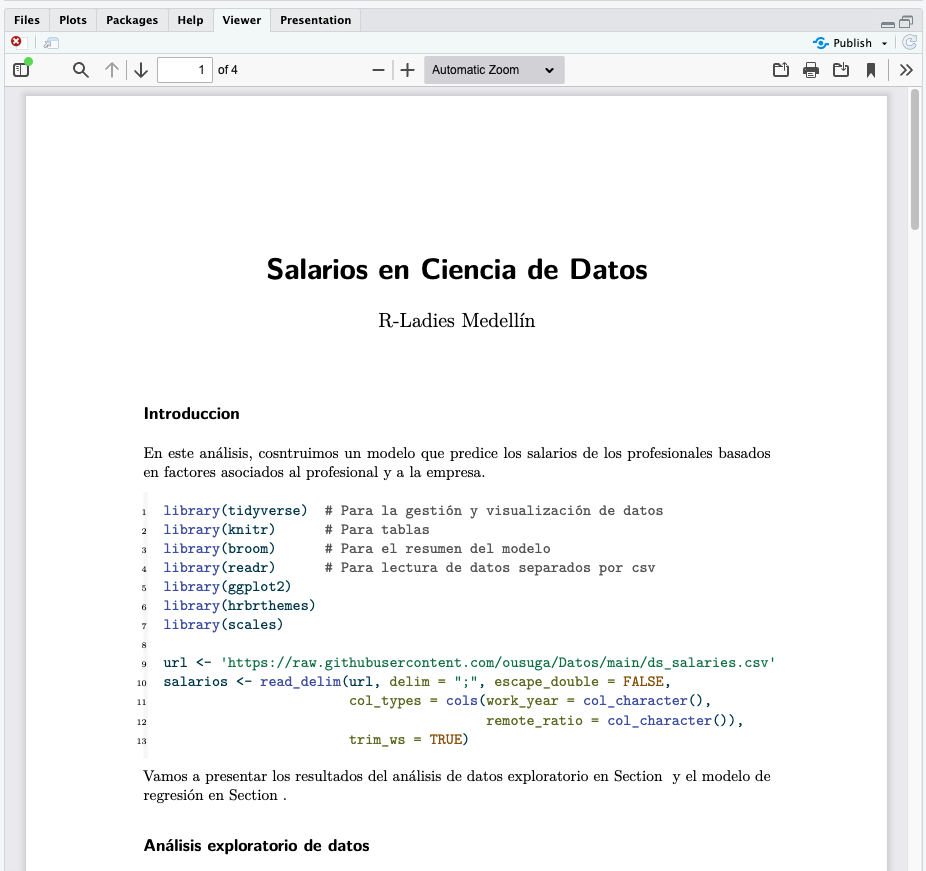
Una opción de formato en la que no entraremos en demasiados detalles en este tutorial es revealjs. ¡Con este formato puedes hacer presentaciones con Quarto! De hecho, Quarto es compatible con una variedad de formatos para crear presentaciones, incluidos revealjs para diapositivas HTML, pptx para PowerPoint y beamer para LaTeX/PDF. El artículo Presentaciones brinda un recorrido completo sobre la creación de presentaciones con Quarto.
2.2 Múltiples formatos
Algunos documentos que se crean tendrán un solo formato de salida, sin embargo, en muchos casos será deseable admitir múltiples formatos. Agreguemos los formatos html y docx a nuestro documento y modifiquemos algunas opciones específicas de cada formato.
---
title: "Salarios en Ciencia de Datos"
author: "R-Ladies Medellín"
highlight-style: pygments
format:
html:
code-fold: true
html-math-method: katex
pdf:
geometry:
- top=30mm
- left=30mm
docx: default
---Las dos primeras líneas son metadatos de documentos genéricos que no están relacionados en absoluto con los formatos de salida.
---
title: "Salarios en Ciencia de Datos"
author: "R-Ladies Medellín"
---La siguiente línea es una opción de formato de documento que se aplica a todos los formatos, por lo que se especifica en el nivel raíz.
---
highlight-style: pygments
---A continuación, tenemos la opción de format, donde proporcionamos opciones específicas de formato.
---
format:
html:
code-fold: true
html-math-method: katex
pdf:
geometry:
- top=30mm
- left=30mm
docx: default
---Los formatos html y pdf ofrecen cada uno una opción o dos. Por ejemplo, para la salida HTML queremos que el usuario tenga control sobre mostrar u ocultar el código (code-fold: true) y usar katex para texto matemático. Para PDF definimos algunos márgenes. El formato docx es un poco diferente: especifica docx: default. Esto indica que solo queremos usar todas las opciones predeterminadas para el formato.
3 Renderizar
Al hacer clic en el botón Render en RStudio, el documento se renderizará en el primer formato que aparece en YAML.
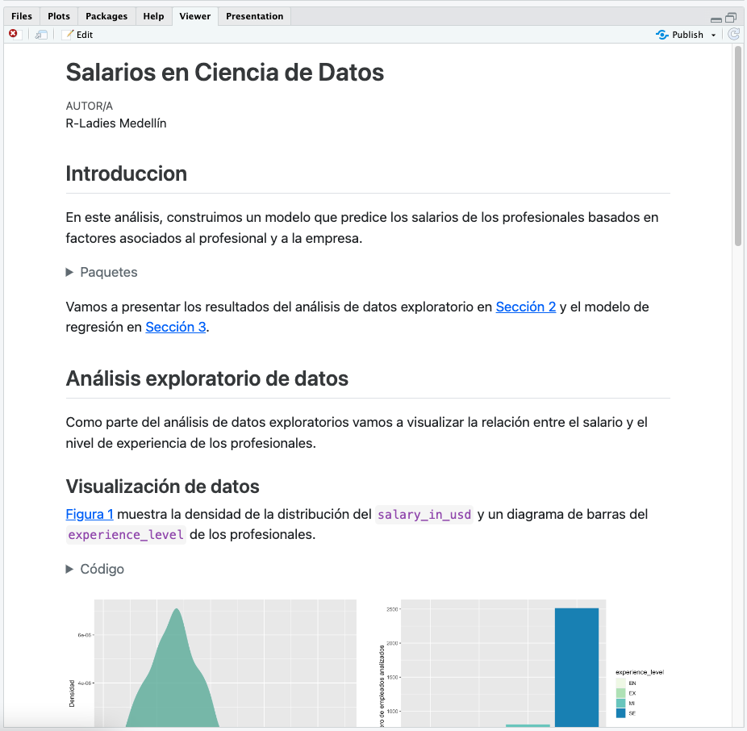
Tenga en cuenta que el botón Render también tiene un menú desplegable que le permite renderizar a cualquiera de los formatos que se enumeran en el frente de YAML:
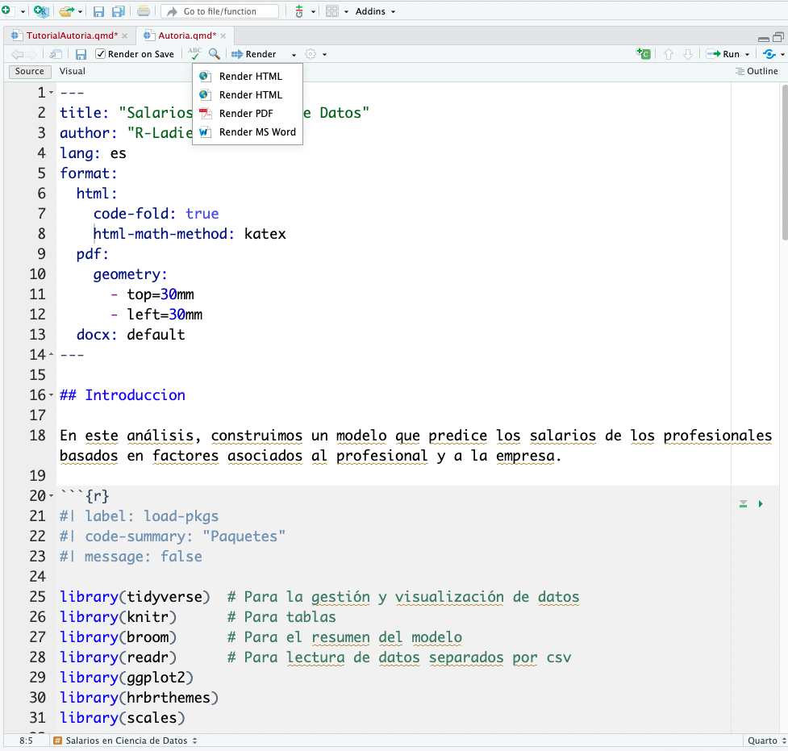
4 Secciones
Puede usar una tabla de contenido y/o una numeración de secciones para que a los lectores les resulte más fácil navegar por su documento. Haga esto agregando las opciones toc y/o number-sections a las opciones del documento. Tenga en cuenta que estas opciones generalmente se especifican en el nivel raíz porque se comparten en todos los formatos.
---
title: "Salarios en Ciencia de Datos"
author: "R-Ladies Medellín"
toc: true
number-sections: true
highlight-style: pygments
format:
html:
code-fold: true
html-math-method: katex
pdf:
geometry:
- top=30mm
- left=30mm
docx: default
---Así es como se ve este documento cuando se representa en HTML.
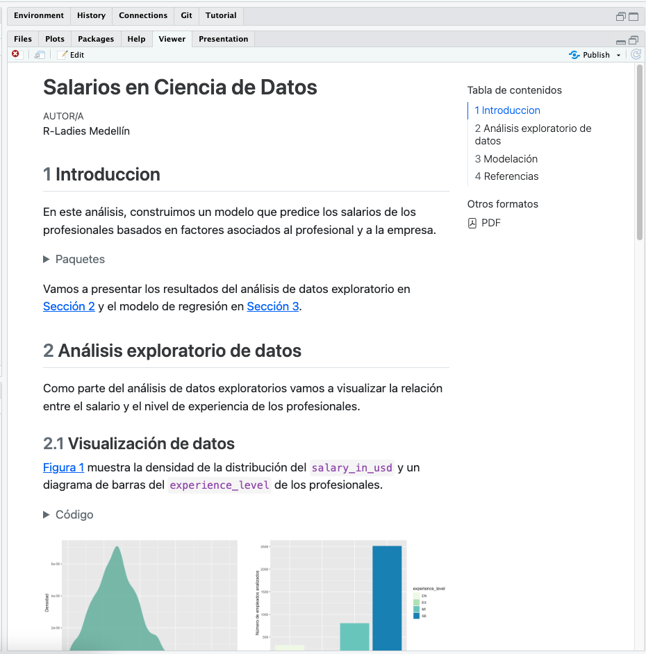
Hay muchas opciones disponibles para controlar el comportamiento de la tabla de contenido y la numeración de las secciones. Consulte la documentación del formato de salida (por ejemplo, HTML, PDF, MS Word) para obtener detalles adicionales.
5 Ecuaciones
Si está utilizando el modo de editor visual, puede agregar ecuaciones LaTeX a documentos Quarto en RStudio utilizando la herramienta Insert Anything. Puede acceder a él con / al comienzo de un bloque vacío.
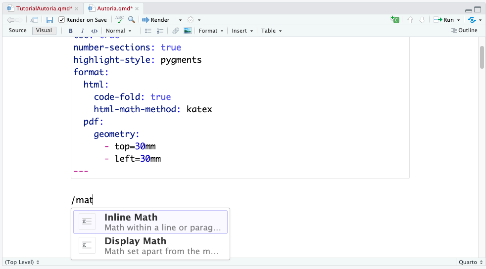
Las ecuaciones (en una nueva línea) están delimitadas con \$\$...\$\$ mientras que las ecuaciones en línea están delimitadas con \$...\$. Agregue lo siguiente como visualización matemática en el documento.
Salario = \hat{\beta}_0 + \hat{\beta}_1 \times Experiencia + \epsilonRStudio muestra una versión renderizada del tutorial a medida que lo escribe en el editor. Consulte la documentación sobre ecuaciones de markdown para obtener detalles adicionales.
$$
Salario = \hat{\beta}_0 + \hat{\beta}_1 \times Experiencia + \epsilon
$$\[ Salario = \hat{\beta}_0 + \hat{\beta}_1 \times Experiencia + \epsilon \]
6 Citaciones
La herramienta Insert Anything también se puede utilizar para insertar citas en su documento.
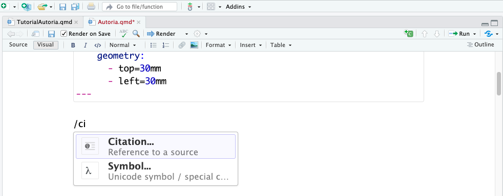
En la siguiente ventana, puede insertar una cita a través de una variedad de fuentes, incluida la bibliografía de su documento, las referencias DOI y las búsquedas de Crossref, DataCite o PubMed. Puede obtener más información sobre las citas con el editor visual aquí.
Seleccione From DOI a la izquierda y copie y pegue el DOI 10.2139/ssrn.3526707 en la barra de búsqueda y presione Search. Luego, seleccione la referencia encontrada e insértela en su documento con el boton Insert.
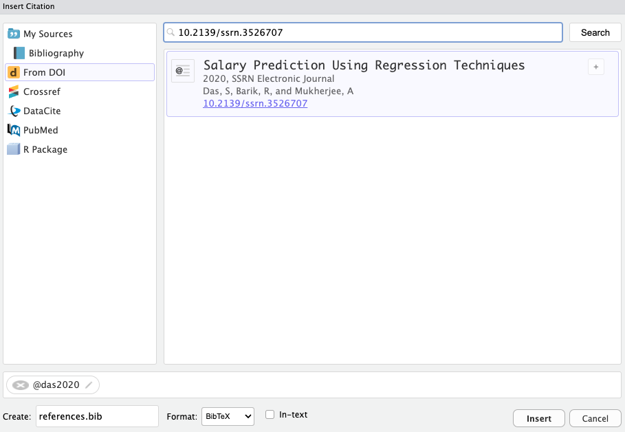
Si esta es la primera cita que agrega a su documento, RStudio creará automáticamente un archivo de bibliografía para usted. Este archivo se llama references.bib de forma predeterminada y RStudio también agregará bibliography: references.bib a los metadatos YAML de su documento.
Tenga en cuenta que los elementos de la bibliografía se citan con la sintaxis @citeid. Agregue el siguiente texto a su documento.
Las referencias se incluirán al final del documento, por lo que incluimos un encabezado ## Referencias en la parte inferior del dcumento. También puede agregar la clase .unnumbered a esta sección haciendo clic en los tres puntos (…) para editar sus atributos.
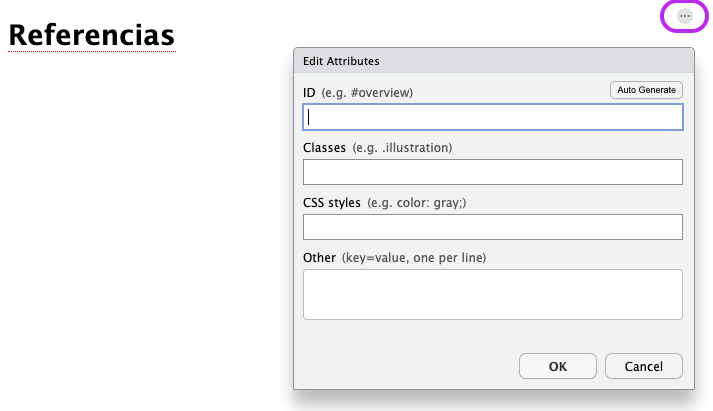
Así es como se ve este documento cuando se representa (con las secciones intermedias eliminadas para resaltar las partes relevantes).
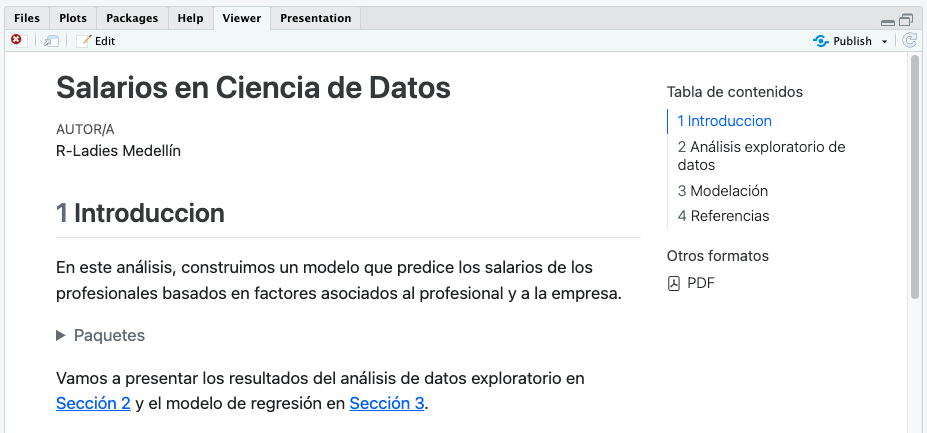
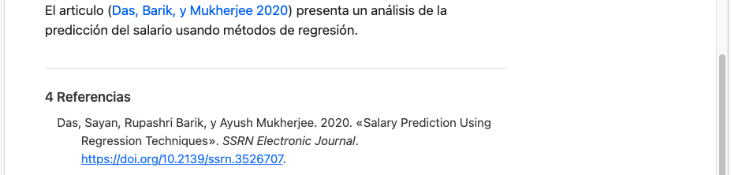La sintaxis de citas @ es muy flexible e incluye soporte para prefijos, sufijos, localizadores y citas en el texto. Consulte la documentación sobre citas y notas al pie para obtener más información.
7 Referencias cruzadas
Las referencias cruzadas facilitan a los lectores la navegación por el documento al proporcionar referencias numeradas e hipervínculos a figuras, tablas, ecuaciones y secciones.
Por ejemplo, para agregar una etiqueta a la ecuación insertada anteriormente, haga clic en los tres puntos para editar sus atributos y use el formato sugerido (comenzando con #eq-) para etiquetar la ecuación.
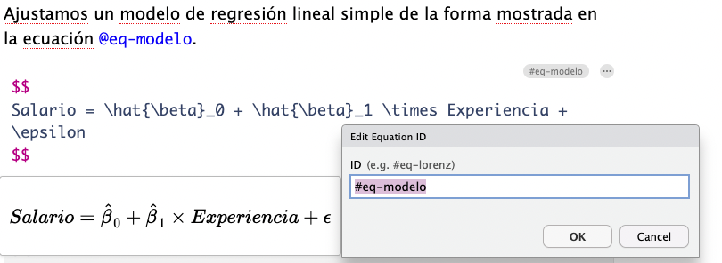
Luego, agregue una referencia cruzada usando la herramienta Insert Anything en el editor visual. Puede agregar una oración como “Ajustamos un modelo de regresión lineal simple de la forma mostrada en” para contextualizar la referencia cruzada y luego agregar la referencia al final de esa oración.
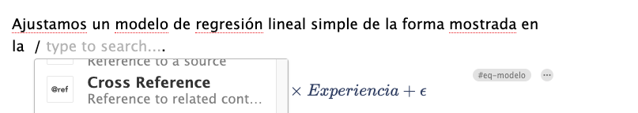
En el menú Insert Cross Reference, navegue hasta la referencia cruzada deseada a la izquierda y seleccione la ecuación etiquetada anteriormente.
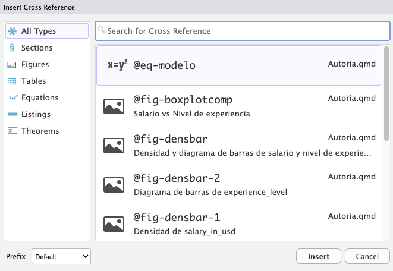
8 Diseño del artículo
El cuerpo de los documentos en Quarto tiene un ancho predeterminado de aproximadamente 700 píxeles. Este ancho se elige para optimizar la legibilidad. Esto normalmente deja algo de espacio disponible en los márgenes del documento y hay algunas formas de aprovechar este espacio.
Podemos usar la column:page-right para indicar que nos gustaría que nuestra figura ocupara todo el ancho de la pantalla, con algún recuadro. Continúe y agregue esta opción de fragmento al fragmento etiquetado como fig-densbar.
#| label: fig-densbar
#| fig-cap: "Densidad y diagrama de barras de salario y nivel de experiencia"
#| fig-subcap:
#| - "Densidad de `salary_in_usd`"
#| - "Diagrama de barras de `experience_level`"
#| layout-ncol: 2
#| column: page-rightAsí se ve el documento cuando se renderiza.
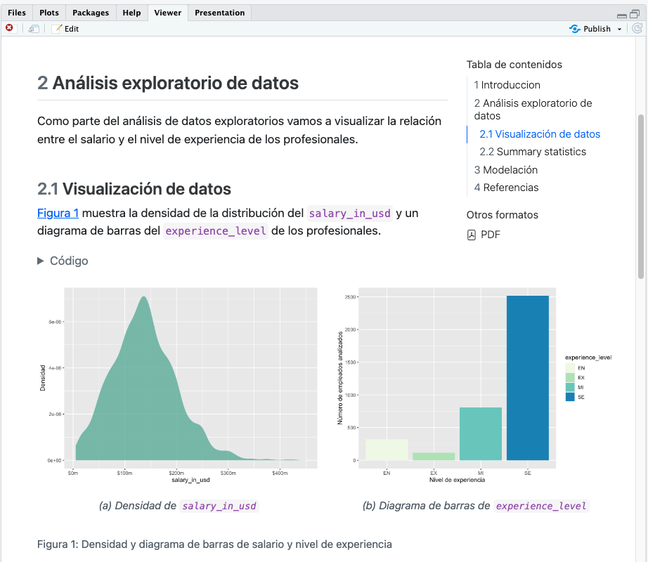
9 Publicación
Una vez que su documento se procesa en HTML, puede publicarlo en RPubs simplemente haciendo clic en el botón Publicar en la barra de herramientas del editor o en la ventana de vista previa. Alternativamente, puede usar la función quarto::quarto_publish_doc().
Si siguió paso a paso este tutorial, ahora debería tener un documento Quarto que implemente todo lo que cubrimos. De lo contrario, puede descargar una versión completa de Autoria.qmd a continuación.
Este material está basado en el material presentado en Quarto.